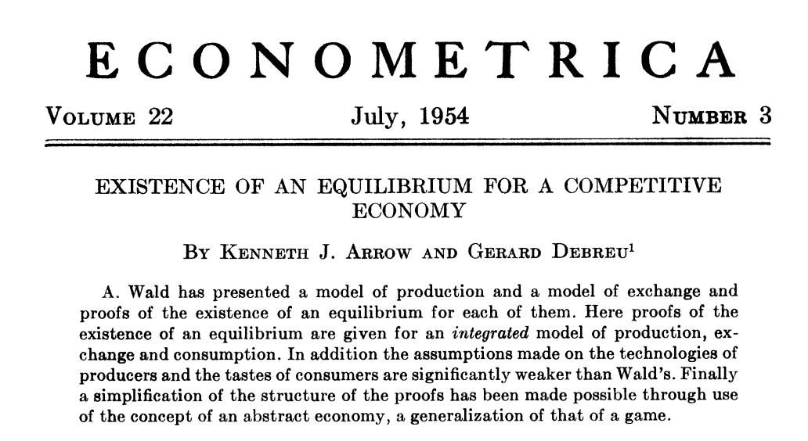

Exchange¶
Why should consumers exchange goods? by which means? Barter, using markets, or naming someone who will dictate who consumes what? Which mechanism will do best?
{kind=link}
There are welfare gains to exchanging. Exchange can only be beneficial because no exchange is always possible. We can achieve best results using various mechanisms if certain conditions are respected. We can start in a simple setting which does not restrict the generality of what we will see.
- Consider a situation with two consumers (1 and 2) and two goods
(\(X\) and \(Y\))
Utility functions \(U_1(X,Y)\) and \(U_2(X,Y)\)
Each consumer has a dotation of each good, \(B_1^e = (X_1^e,Y_1^e)\) and \(B_2^e = (X_2^e,Y_2^e)\).
Examples:
Two farmers, one with an endowment of potatoes, the other with cattle.
Two countries: Country 1 has lots of gas, the other has industrial machinery.
Two consumers on kijiji or Ebay: one has a canoe, the other a laptop.
Where do these endowments come from? For the moment, let’s assume they inherited them.
Market Equilibrium¶
The market allows exchange to take place. In terms of modeling, markets can be summarized by a price vector (if there are many goods and a single relative price if two). There needs to be a legal system that enforces transactions, but that is not apparent directly.
If each consumer has an endowment and individual demand as a function of prices, we can easily find the market equilibrium. Think of a setting where there is no production, like Kijiji.
For individual demands,
Consumer 1 picks \((X_1^c, Y_1^c)\), his marshallian demands.
Given prices \(p_X\) and \(p_Y\), the budget constraint of each agent is
\[p_X X_1^c + p_Y Y_1^c = p_X X_1^e + p_Y Y_1^e\]Prices and determined in equilibrium.
Note again that it is only relative prices that matter for choices. We have two unknown prices, \(p_X\) and \(p_Y\) but only the ratio matters. The budget constraint can be rewritten
\[X_1^c + \frac{p_Y}{p_X} Y_1^c = X_1^e + \frac{p_Y}{p_X} Y_1^e\]
Without losing information, denote \(p = p_Y/p_X\), the relative price of \(Y\) in terms of \(X\). We could also define the relative price as \(p = p_X/p_Y\)! We just have to be consistent.
How do we find the equilibrium price?
Step 1: Individual demands: We are looking for
We get \(X_1^c(p)\) and \(Y_1^c(p)\) using a Lagrangian.
Step 2: The price \(p^*\) is an equilibrium price if at \(p^*\) aggregate demand is equal to aggregate supply. We are looking for \(p^*\) such that
\[X_1^c(p^*)+X_2^c(p^*) = X_1^e + X_2^e \quad and \quad Y_1^c(p^*)+Y_2^c(p^*) = Y_1^e + Y_2^e\]
The quantity of \(X\) exchanged is given by \(X_1^c(p^*) - X_1^e =X_2^e - X_2^c(p^*)\). If \(X_1^c - X_1^e < 0\), consumer 1 is a net supplier of \(X\) (consumer 2 is buying).
Important assumptions:
The market is competitive: Consumers take prices as given. They are price takers.
All goods are homogeneous (identical) and perceived in the same way by buyers and sellers.
Utility of each consumer does not depend on actions of others: no externalities
Let’s look at an example. Consider \(U_1(X,Y) = U_2(X,Y) = \log X + \alpha \log Y\). Fix \(p_X= 1\), and so \(p_Y = p\). Endowments are given by \((X_1^e, Y_1^e, X_2^e, Y_2^e)\). The solution for demands is given by:
\[\begin{split}\begin{aligned} X_1^c &= \frac{1}{1+\alpha}(X_1^e + p Y_1^e) \\ Y_1^c &= \frac{\alpha}{1+\alpha}\frac{X_1^e + p Y_1^e}{p} \end{aligned}\end{split}\]
Market equilibrium for \(X\) implies that
\[X_1^c(p) + X_2^c(p) = X_1^e + X_2^e \Rightarrow p = \alpha \frac{X_1^e + X_2^e}{Y_1^e + Y_2^e}\]
The market for \(Y\) is also in equilibrium at \(p\). Why is only one market necessary to find the equilibrium price?
Walras” Law¶
We have one unknown \(p\) but two equilibrium equations… Market equilibrium on one market actually implies equilibrium on the other. To see this, consider the two budget constraints:
\[X_1^c + p Y_1^c = X_1^e + p Y_1^e \quad and \quad X_2^c + p Y_2^c = X_2^e + p Y_2^e\]
If we add them up, we get:
\[[X_1^c + X_2^c] + p [Y_1^c + Y_2^c] = [X_1^e + X_2^e] + p[Y_1^e + Y_2^e]\]
An equilibrium for \(X\) implies that
\[p[Y_1^c + Y_2^c] = p [Y_1^e + Y_2^e] \Rightarrow Y_1^c + Y_2^c = Y_1^e + Y_2^e\]
Walras” Law enables us to focus on one market to find the equilibrium relative price. We can generalize to more than two goods.
What determines the equilibrium price?¶
The equilibrium price is a function of preferences of agents and endowments. In the example,
The price of \(Y\) increases with the relative preference for \(Y\), given by \(\alpha\). Supply being fixed, if demand is increasing, the equilibrium price has to increase to equate supply and demand (as demand decreases in the price). If the good \(Y\) is scarce (endowments are small \(Y_1^e + Y_2^e\)), the equilibrium price has to increase as well.
The price is a signal of preferences and the relative scarcity of goods. Does this market equilibrium yield the highest welfare possible for agents? To make a judgment on allocations, we need to sidetrack to define what is an optimal allocation of resources in a context that is independent of whether or not we use markets.
Pareto Optimal Allocations¶
We have seen that a Pareto improvement is possible when none of the consumers lose but at least one gains. When there is no Pareto improvement possible, we say that an allocation is Pareto optimal or efficient. We can apply this to allocations in an exchange economy.
To do that, we need Edgeworth boxes, a useful tool. Think of it as a coordinate system that will allow to plot in 2D allocations when in fact there are 4 dimensions, quantities of goods \(X\) and \(Y\) for consumers 1 and 2. To do that, we will use the fact that there exist a fixed quantity of goods X and Y in an exchange economy, endowments. Exercice A will get you to construct an Edgeworth Box.
{kind=link}
Exercise A: Show the endowments \((x^e_1,y_1^e) = (50,20)\) and \((x^e_2,y_2^e)=(20,50)\) in an Edgeworth Box.
A number of observations can be made from an Edgeworth Box.
First, a point in the box where two indifference curves cross cannot be Pareto optimal. Why? Because we can define a core, a set of points that are Pareto improvements from the point where the indifference curves cross. Hence, the allocation cannot be aPareto optimal allocation.
{kind=link}
Allocation E cannot be optimal: Indifference curves cross. Allocation A is a Pareto improvement. The core is the zone between the two indifference curves.¶
When the core is empty, the allocation is Pareto optimal. This implies that a Pareto optimal allocation is one where the indifference curves are tangent.
The contract curve is the curve that links all Pareto optimal allocations. Indeed there are many Pareto optimal allocations. The Pareto frontier is the curve in the space \((U_1,U_2)\) which indicates all Pareto optimal allocations in terms of utility levels.
{kind=link}
{kind=link}
Allocations A and C are Pareto optimal. They are found on the contract curve and on the Pareto frontier. But allocation B is not optimal because indifference curves cross. It is therefore below the Pareto frontier.
How do we compute a Pareto optimal allocation? We can use constrained optimization. The most efficient way is going to be to maximize utility of one agent, keeping utility of the other at some level (hence looking for Pareto improvements), and meeting the constraints for resources of each goods.
subject to :
We construct a Lagrangian with three constraints:
There are 7 FOCs and 3 multipliers. The following exercises will help you practice this technique.
Exercise B: Find the Pareto optimal allocation for utility functions \(u_1\) and \(u_2\) strictly positive and concave, \(u_j = \sqrt{x_j y_j}\) for consumers \(j=1,2\), using the Lagrangian method.
Exercise C: Find the Pareto optimal allocation if endowments are \(x_e = 128\) and \(y_e=32\) if \(\overline{u}_2=48\).
Exercise D: In exercise C, is the allocation \((64,28,64,4)\) Pareto optimal? If it is not, find a Pareto improvement in the core.
Market Equilibrium in an Edgeworth Box
The budget constraint depends on endowments and shows allocations which are possible at price \(p\). A market equilibrium implies that the \(MRS\) is equal to the price. Since the price is the same for each consumer, it implies that the \(MRS\) of each consumer are equal in a market equilibrium.
{kind=link}
Exchange and Welfare¶
Consider the equilibrium price: \(p^*\) and quantities consumed by consumer 1: \(X^c_1 = X^c_1(p^*)\) and \(Y^c_1 = Y^c_1(p^*)\). We have that \(U_1(X^c_1, Y^c_1) \geq U_1(X^e_1, Y^e_1)\)
Why? at price math:p^* the endowment \(B^e_1 = (X^e_1,Y^e_1)\) is available but the consumer prefers \(B^c_1=(X^c_1, Y^c_1)\). So preferences reveal that \(U_1(X^c_1, Y^c_1) \geq U_1(X^e_1, Y^e_1)\).
Weflare Theorems¶
First Theorem
A market equilibrium is Pareto optimal.
If an allocation is Pareto optimal, we can’t improve the welfare of one consumer without decreasing that of others.
Why this result? With the market equilibrium \(X^c_1(p^*),Y^c_1(p^*),X^c_2(p^*),Y^c_1(p^*)\) indifference curves are tangent to the budget line. If they are tangent, it means that we have a Pareto optimal allocation.
Second Theorem
We can reach any Pareto optimal allocation using a market equilibrium if we allow redistribution of resources (endowments).
This requires the possibility of implementing lump-sum taxes on endowments or confiscating. The Pareto optimal allocation is decentralized using a market equilibrium with redistribution.
Why does it work?
For any allocation \((X_1^*,Y_1^*)\), and corresponding values for \((X_2^*,Y_2^*)\), indifference curves are tangent. With the market line (budget line) drawn, we can redistribution endowments to get on the budget line and make the market equilibrium feasible. The budget line, determined by the price, is a tool to get to \((X^*,Y^*)\). But this is not feasible from any allocation of endowments.
{kind=link}
The Pareto optimum A cannot be reached from \(E_0\). But a Transfer of \(T_X\) of good \(X\) from consumer 2 to consumer 1 allows to reach endowment situation \(E_1\), from which we can reach Pareto optimal allocation A with a market equilibrium at price \(p\).¶
Exercise E: Find the transfer of endowments and the market equilibrium price, starting from \((64,28,64,4)\), which gives the allocation found in exercise D.
Market Efficiency¶
The two theorems establish that
The market is efficient
If we want another Pareto optimal allocation using markets, we can obtain it by redistribution of endowments.
This is a result which is very important in economics: the decentralized market economy allows to get what the planner would have obtained without sacrificing freedom for agents to do what they want and have private property.
The market economy only requires that agents know their own preferences. According to Hayek, markets, when they function well, aggregate all the necessary information on the scarcity of goods and preferences.
Limitations¶
These results are encouraging, but they rest on important assumptions:
Markets are competitive (price takers)
Goods are homogeneous (we know what we purchase)
There are no externalities
We can impose lump-sum taxes (for the second theorem)
General equilibrium theory, of which the exchange economy is the foundation, has had an enduring impact in both micro and macro, in particular for modeling financial markets. Many, including governments, use these models to make projections and analyze interventions.
History¶

Kennet Arrow and Gérard Debreu are generally credited for showing the existence of general equilibrium. They came from different backgrounds and were interested in the question for different reasons. Düppe (2017) documents how this project came about and the tensions that arose between the two men as they wrote this important paper.
Python Example¶